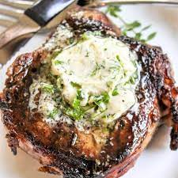
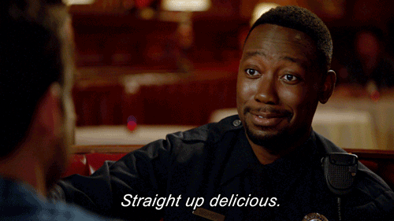

Secret Butter Recipe
This Butter is that good good! My special secret to making them steaks so juicy and delicious there will never be a need for steak sauce again!
Ingrediants
Please keep in mind that the amount of each are per steak you're making.
- 2 Tablespoons of unsalted Butter p
- 2 Teaspoons of Garlic POWDER NOT SALT
- 2 Teaspoons of Italian Seasoning
- 1 Teaspoon of Cinnamon
- 1-2 drops of Vanilla Extract

Directions
- Mix in butter with the dry ingredients in a small dipping cup.
- After thoroughly mixing the ingredients together, add in your vanilla extract.
- Mix in Vanilla Extract so it's all mixed together for about 3-5 minutes.
- Cover tightly with Plastic Wrap and toss in the fridge for 1-2+ Hours.
- Toss on your steak when it's almost finished cooking and let it melt on the steak!
- ENJOY!
